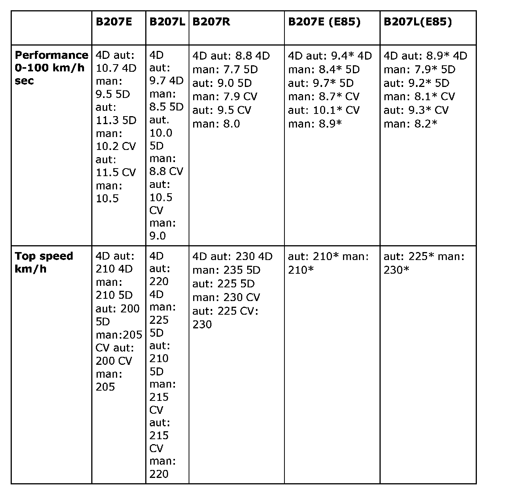
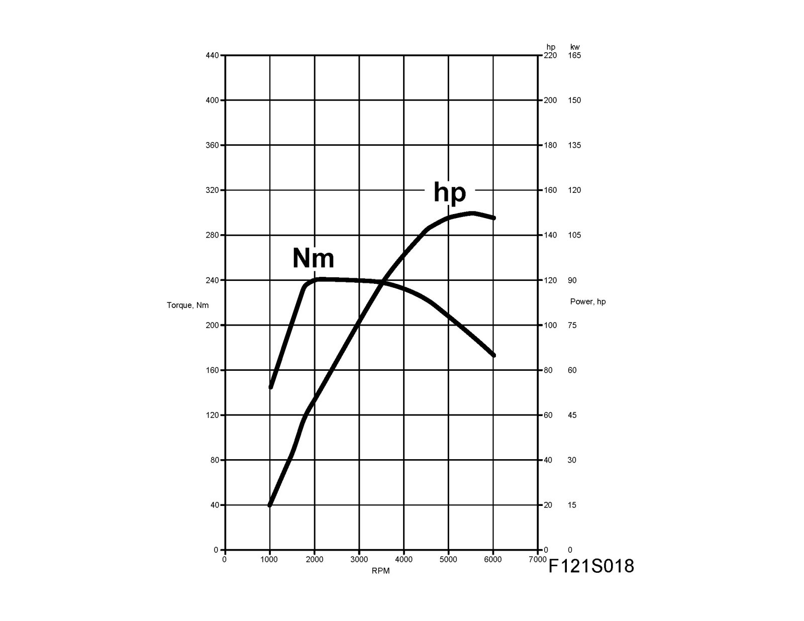
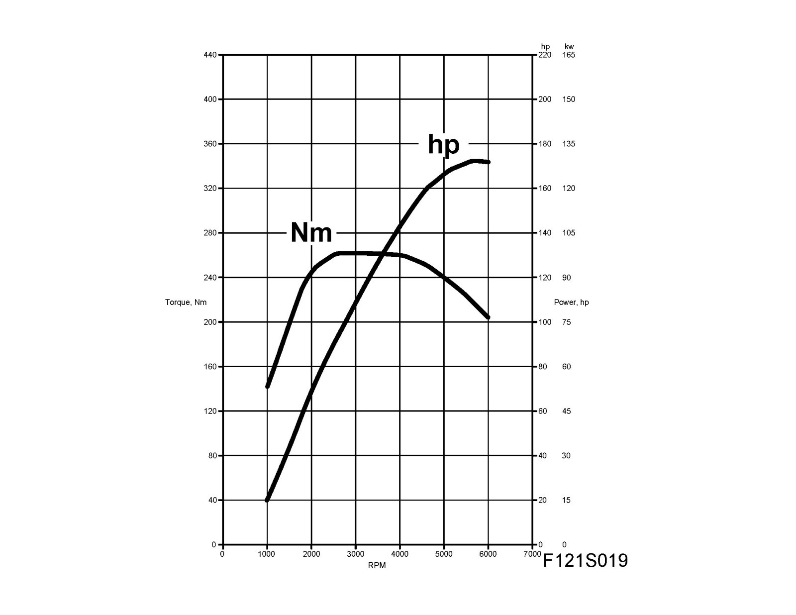
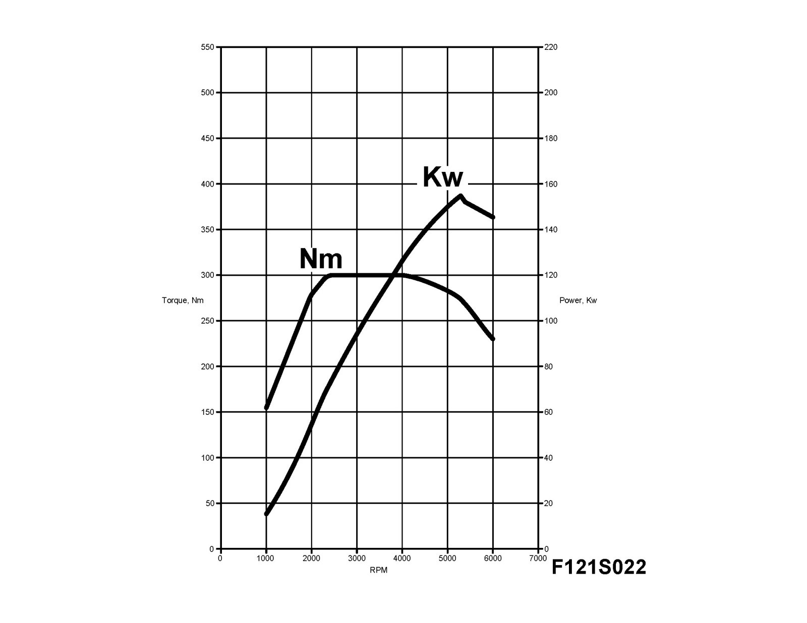

Torque and Power Curves
Torque and power curves
^ measured value with E85
B207E
150 hp (110 kw)
240 Nm

B207L
175 hp (129 kw)
265 Nm

B207E (E85)
175 hp (129 kw)
265Nm
B207L (E85)
200 hp (147 kw)
300Nm
B207R
210 hp (154 kw)
300 Nm

B207F
175 hp (130 kw)
265 Nm
B207G
163 hp (122 kw)
B207M
200 hp (149 kw)
300Nm
B207S
210 hp (157 kw)